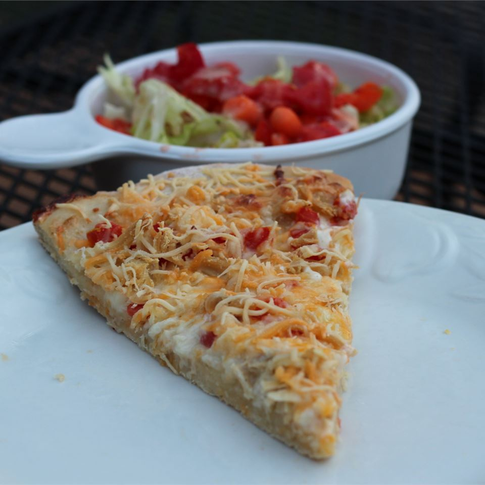

Gourmet Chicken Pizza

Description
Here is a chicken pizza recipe that you will love. A perfect piece of pizza!
Ingredients
- 2 skinless, boneless chicken breast halves
- 1 (10 ounce) can refrigerated pizza crust
- ½ cup Ranch-style salad dressing
- 1 cup shredded mozzarella cheese
- 1 cup shredded Cheddar cheese
- 1 cup chopped tomatoes
- ¼ cup chopped green onions
Steps
- Preheat oven to 425 degrees F (220 degrees C). Lightly grease a pizza pan or medium baking sheet.
-
Place chicken in a large skillet over medium-high heat. Cook until no longer pink, and juices run clear.
Cool, then either shred or chop into small pieces.
-
Unroll dough, and press into the prepared pizza pan or baking sheet.
Bake crust for 7 minutes in the preheated oven, or until it begins to turn golden brown. Remove from oven.
-
Spread ranch dressing over partially baked crust. Sprinkle on mozzarella cheese.
Place tomatoes, green onion, and chicken on top of mozzarella cheese, then top with Cheddar cheese.
Return to the oven for 20 to 25 minutes, until cheese is melted and bubbly.